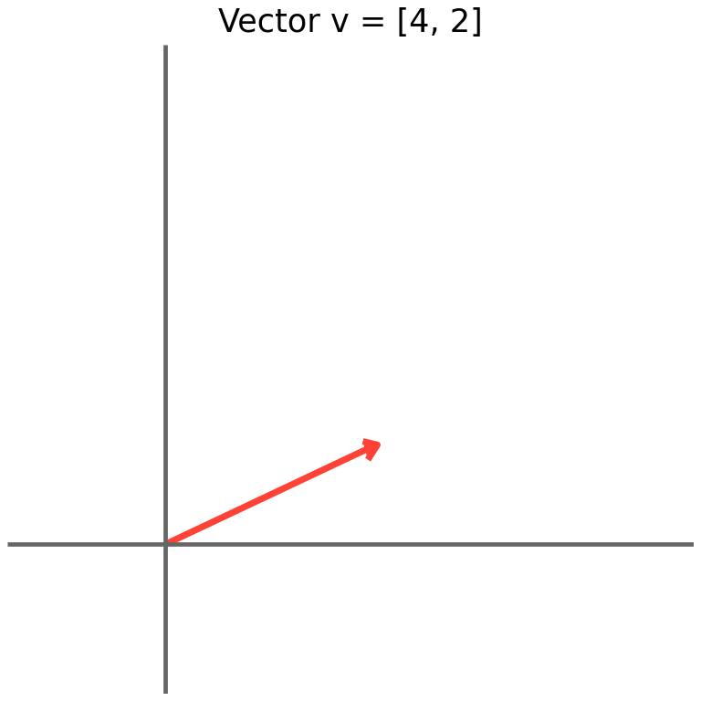
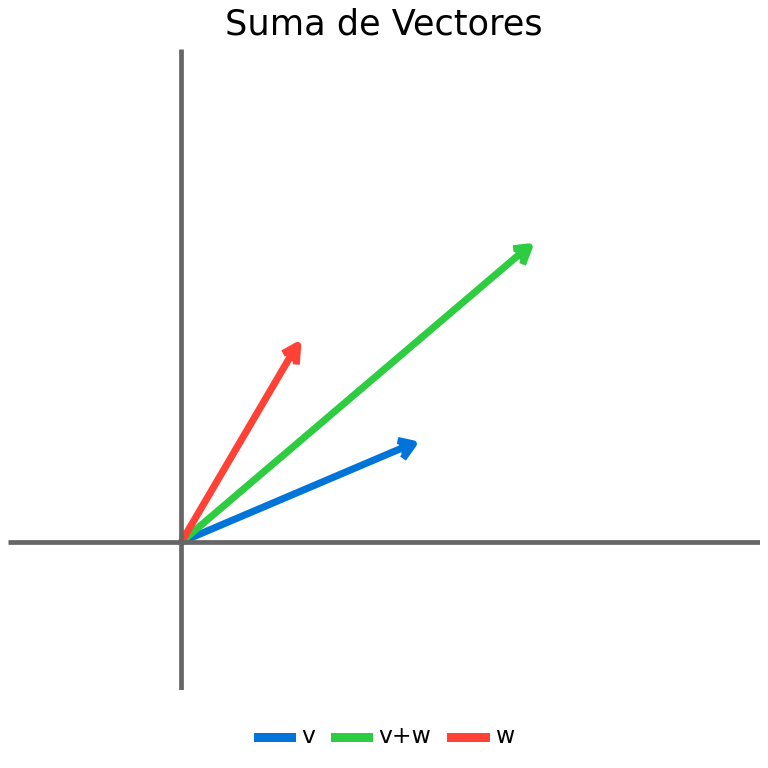
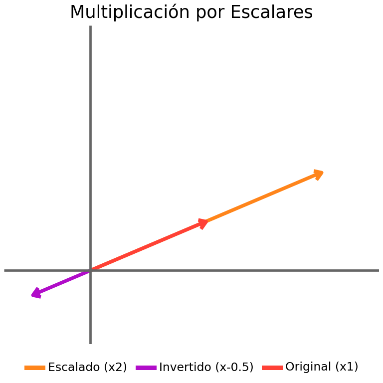
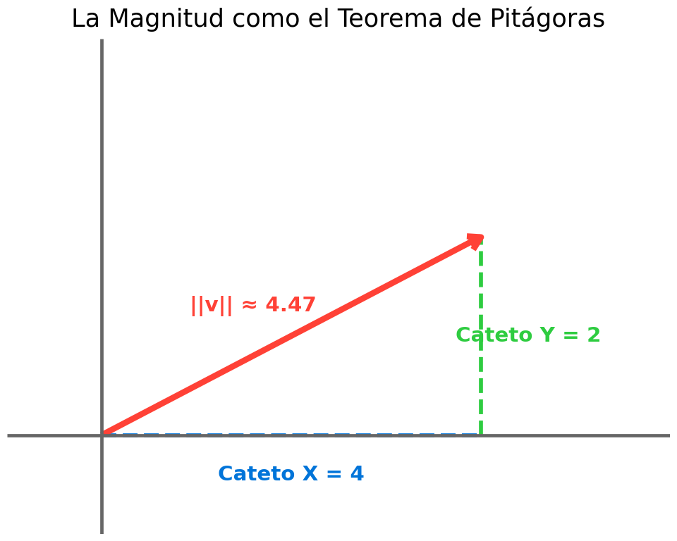
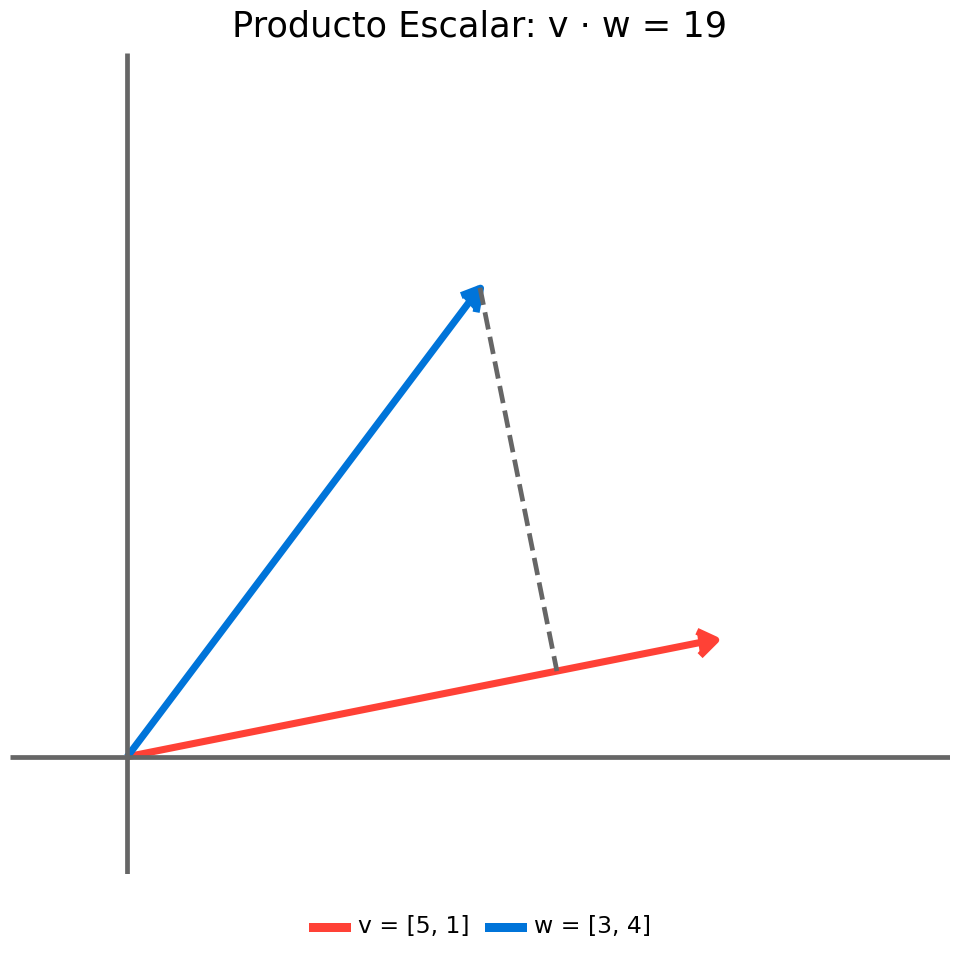
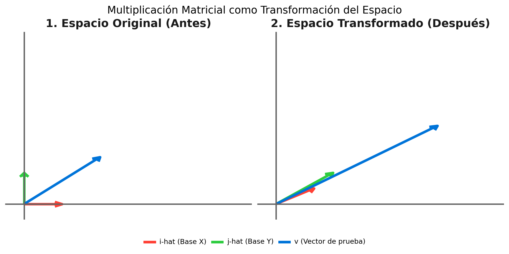

Álgebra Lineal
¿Qué es un Vector?
En esencia, un vector es una lista ordenada de números. Desde el punto de vista geométrico, podemos imaginarlo como una flecha que nace en el origen \((0,0)\) y termina en unas coordenadas específicas del espacio.
Por ejemplo, el vector \(\vec{v} = [4, 2]\) nos dice que avancemos 4 unidades en el eje X y 2 unidades en el eje Y.
Suma de Vectores
Si tenemos \(\vec{v} = [4, 2]\) y le sumamos el vector \(\vec{w} = [2, 4]\), estamos realizando una traslación en el espacio.La operación matemática es directa componente a componente:
\[ \vec{v} + \vec{w} = [4 + 2, 2 + 4] = [6, 6] \]

Escalado
Multiplicar un vector por un número real (llamado escalar) cambia su magnitud (longitud) y, si el número es negativo, invierte su dirección. La orientación de la línea sobre la que descansa el vector se mantiene igual.Hagamos la prueba multiplicando nuestro vector original por \(2\) (lo estiramos) y por \(-0.5\) (lo encogemos e invertimos).
\[ \vec{v}_{alto} = 2 \cdot [4, 2] = [8, 4] \]

Magnitud de un Vector
La magnitud (o norma) de un vector representa su longitud geométrica desde el origen hasta su extremo. Si conocemos las componentes del vector \(\vec{v} = [v_1, v_2]\), podemos calcular su magnitud aplicando el Teorema de Pitágoras, donde las componentes del vector actúan como los catetos y la magnitud como la hipotenusa:
\[ \|\vec{v}\| = \sqrt{v_1^2 + v_2^2} \]
Para nuestro vector \(\vec{v} = [4, 2]\), el cálculo matemático es: \[ \|\vec{v}\| = \sqrt{4^2 + 2^2} = \sqrt{16 + 4} = \sqrt{20} \approx 4.47 \]
Para entenderlo visualmente, podemos descomponer el vector en sus componentes horizontal y vertical. Esto forma un triángulo rectángulo perfecto en el plano cartesiano.

Producto Escalar
El producto escalar (también conocido como producto punto o dot product) es una operación entre dos vectores que devuelve un único número real (un escalar).
Algebraicamente, si tenemos dos vectores en \(\mathbb{R}^2\), \(\vec{v} = [v_1, v_2]\) y \(\vec{w} = [w_1, w_2]\), el producto escalar se calcula multiplicando componente a componente y sumando los resultados:
\[ \vec{v} \cdot \vec{w} = v_1 \cdot w_1 + v_2 \cdot w_2 \]
Geométricamente, el producto escalar nos indica cuánto de un vector se extiende en la dirección de otro. Está íntimamente ligado a la proyección y al ángulo \(\theta\) entre ambos vectores mediante la fórmula:
\[ \vec{v} \cdot \vec{w} = \|\vec{v}\| \|\vec{w}\| \cos(\theta) \]
Donde \(\|\vec{v}\|\) y \(\|\vec{w}\|\) son las magnitudes (longitudes) de los vectores. Si el producto escalar es positivo, los vectores apuntan en direcciones similares; si es negativo, apuntan en direcciones opuestas; y si es cero, son ortogonales (perpendiculares).
El producto escalar de v y w es: 19
Matrices
Tradicionalmente se enseña que una matriz es una simple “tabla de números”, y que multiplicar una matriz por un vector es una tediosa regla de cálculo (multiplicar filas por columnas).
Sin embargo, la perspectiva más poderosa del álgebra lineal es geométrica: una matriz es una función que transforma el espacio. Toma un vector de entrada, lo mueve, lo rota, lo estira o lo deforma, y nos devuelve un vector de salida.
\[f(\vec{v}) = A\vec{v}\]
El Secreto: El destino de las Bases (\(\hat{i}\) y \(\hat{j}\))
Cualquier vector en el plano cartesiano es una combinación de los vectores unitarios básicos:
\(\hat{i} = [1, 0]\) (un paso a la derecha)
\(\hat{j} = [0, 1]\) (un paso hacia arriba)
Si aplicamos una transformación lineal al espacio, todo el plano se deforma, pero las líneas paralelas siguen siendo paralelas y el origen \((0,0)\) no se mueve. Debido a esta propiedad, si sabemos exactamente a dónde van a parar \(\hat{i}\) y \(\hat{j}\) tras la transformación, sabremos a dónde irá a parar absolutamente cualquier otro vector.
Una matriz de \(2 \times 2\) no es más que el registro de esos dos destinos:
\[A = \begin{pmatrix} | & | \\ \text{Destino de } \hat{i} & \text{Destino de } \hat{j} \\ | & | \end{pmatrix} = \begin{pmatrix} a & b \\ c & d \end{pmatrix}\]
Donde:
El nuevo destino de \(\hat{i}\) es la primera columna: \([a, c]^T\)
El nuevo destino de \(\hat{j}\) es la segunda columna: \([b, d]^T\)
Ejemplo Práctico: Una Deformación (Shear)
Definamos una matriz de transformación \(T\) que deforma el espacio lateralmente:
\[ \begin{aligned} T &= \begin{pmatrix} 1 & 1.5 \\ 0.5 & 1 \end{pmatrix} \\ T\hat{i} &= \begin{pmatrix} 1 & 1.5 \\ 0.5 & 1 \end{pmatrix} \begin{pmatrix} 1 \\ 0 \end{pmatrix} = \begin{pmatrix} 1 \\ 0.5 \end{pmatrix} \\ T\hat{j} &= \begin{pmatrix} 1 & 1.5 \\ 0.5 & 1 \end{pmatrix} \begin{pmatrix} 0 \\ 1 \end{pmatrix} = \begin{pmatrix} 1.5 \\ 1 \end{pmatrix} \end{aligned} \]
Esto significa que:
\(\hat{i} = [1, 0]\) se moverá a su nueva posición: \([1, 0.5]\)
\(\hat{j} = [0, 1]\) se moverá a su nueva posición: \([1.5, 1]\)
Veamos que podemos transformar cualquier vector usando esta matriz. Por ejemplo, el vector \(\vec{v} = [2, 1.5]\) se puede expresar como:
\[ \begin{aligned} T\vec{v} = \begin{pmatrix} 1 & 1.5 \\ 0.5 & 1 \end{pmatrix} \begin{pmatrix} 2 \\ 1.5 \end{pmatrix} \\ &= \begin{pmatrix} 1 \cdot 2 + 1.5 \cdot 1.5 \\ 0.5 \cdot 2 + 1 \cdot 1.5 \end{pmatrix} \\ &= \begin{pmatrix} 2 + 2.25 \\ 1 + 1.5 \end{pmatrix} \\ &= \begin{pmatrix} 4.25 \\ 2.5 \end{pmatrix} \end{aligned} \]
O, si lo pensamos en términos de las bases:
\[ \begin{aligned} T\vec{v} &= 2\hat{i} + 1.5\hat{j} \\ &= 2\hat{i} + 1.5\hat{j} \\ &= 2\begin{pmatrix} 1 \\ 0.5 \end{pmatrix} + 1.5\begin{pmatrix} 1.5 \\ 1 \end{pmatrix} \\ &= \begin{pmatrix} 2 \\ 1 \end{pmatrix} + \begin{pmatrix} 2.25 \\ 1.5 \end{pmatrix} \\ &= \begin{pmatrix} 4.25 \\ 2.5 \end{pmatrix} \end{aligned} \]

Simulación
Utiliza el siguiente laboratorio interactivo para visualizar en tiempo real cómo la matriz de transformación deforma el espacio.
Puedes cambiar los valores numéricos de la matriz directamente o arrastrar los sliders para realizar transformaciones personalizadas.
Haz clic en “Transformar” para ver la transición animada desde el plano cartesiano estándar, o en “Espacio Original” para regresar a la identidad.
Explora los Presets Rápidos para entender casos clave como las rotaciones puras, los cizallamientos (shearing) o el caso crítico de la pérdida de dimensión.
Al interactuar con la simulación, presta especial atención a los siguientes fenómenos matemáticos:
- La Deformación Lateral (Shear)
Si configuras la matriz como \(\begin{pmatrix} 1 & 1.2 \\ 0 & 1 \end{pmatrix}\), notarás que los puntos a lo largo del eje X no cambian su componente Y, pero se desplazan horizontalmente de forma proporcional a su altura. Esto es un ejemplo de cómo una transformación lineal puede alterar los ángulos entre líneas sin curvarlas.
- El Determinante como Escalador de Área
El determinante de la matriz \(A\) (calculado automáticamente en el panel inferior) tiene un significado geométrico absoluto: es el factor por el cual se multiplican todas las áreas en el plano.
Si dibujas un cuadrado de área \(1 \times 1\) en el espacio original, tras aplicar una transformación con un determinante de \(2.5\), el polígono de la estrella y el fondo se estirarán cubriendo exactamente un área \(2.5\) veces mayor.
Si el determinante es negativo, significa que el espacio se ha “invertido” tridimensionalmente (reflejado como en un espejo).
Transformaciones Multidimensionales (\(\mathbb{R}^n \to \mathbb{R}^m\))
Hasta ahora, hemos explorado transformaciones donde la dimensión del espacio de entrada es la misma que la del espacio de salida (\(\mathbb{R}^2 \to \mathbb{R}^2\)), lo que geométricamente se traduce en deformar, rotar o escalar un plano manteniéndonos dentro del mismo plano. Esto requiere matrices cuadradas de \(2 \times 2\).
Sin embargo, el álgebra lineal despliega todo su poder cuando las matrices no son cuadradas. Una transformación lineal puede tomar un vector de una dimensión y proyectarlo o mapearlo de forma limpia a un espacio dimensional completamente diferente (\(\mathbb{R}^n \to \mathbb{R}^m\)).
- Inmersión en Mayor Dimensión: De 2D a 3D (\(\mathbb{R}^2 \to \mathbb{R}^3\))
Imagina que tienes una hoja de papel bidimensional (nuestro plano \(\mathbb{R}^2\) de entrada) y deseas suspenderla, rotarla o doblarla de forma rígida dentro de una habitación tridimensional (\(\mathbb{R}^3\)). Para lograr este viaje dimensional, necesitamos una matriz de \(3 \times 2\) (3 filas, 2 columnas).
\[A = \begin{pmatrix} a & b \\ c & d \\ e & f \end{pmatrix}\]
Esta matriz toma un vector de entrada de dos dimensiones \(\vec{v} = [x, y]^T\) y produce un vector de salida de tres dimensiones \(\vec{v}' = [x', y', z']^T\):
\[\vec{v}' = A\vec{v} = \begin{pmatrix} a & b \\ c & d \\ e & f \end{pmatrix} \begin{pmatrix} x \\ y \end{pmatrix} = \begin{pmatrix} ax + by \\ cx + dy \\ ex + fy \end{pmatrix}\]
La Intuición Geométrica
¿Recuerdas el “secreto” de los vectores unitarios base \(\hat{i}\) y \(\hat{j}\)? Aquí se aplica exactamente el mismo principio:
La primera columna de la matriz, \([a, c, e]^T\), representa las coordenadas tridimensionales de destino del vector unitario \(\hat{i}\).
La segunda columna, \([b, d, f]^T\), representa el destino en el espacio 3D del vector unitario \(\hat{j}\).
Dado que dos vectores solo pueden generar, a lo sumo, un plano (un subespacio de dimensión 2), el espacio de salida de esta transformación no llenará las tres dimensiones de la habitación, sino que representará un plano perfectamente plano flotando o inclinado en el espacio tridimensional.
- Reducción de Dimensión: De 3D a 2D (\(\mathbb{R}^3 \to \mathbb{R}^2\))
El caso inverso es igualmente fascinante. Consiste en tomar un espacio tridimensional de entrada (como un objeto en un videojuego o el propio mundo real) y “aplastarlo” o proyectarlo sobre una pantalla plana bidimensional. Esta es la base de los motores gráficos de renderizado y el análisis de reducción de dimensiones (como PCA).
Para proyectar de \(\mathbb{R}^3 \to \mathbb{R}^2\), utilizamos una matriz de \(2 \times 3\) (2 filas, 3 columnas):
\[B = \begin{pmatrix} a & b & c \\ d & e & f \end{pmatrix}\]
La matriz actúa sobre un vector de entrada en 3D \(\vec{u} = [x, y, z]^T\), dando como resultado un vector en 2D \(\vec{u}' = [x', y']^T\):
\[\vec{u}' = B\vec{u} = \begin{pmatrix} a & b & c \\ d & e & f \end{pmatrix} \begin{pmatrix} x \\ y \\ z \end{pmatrix} = \begin{pmatrix} ax + by + cz \\ dx + ey + fz \end{pmatrix}\]
La Intuición de la Sombra
Geométricamente, esta transformación calcula una proyección (similar a cómo la luz de una linterna proyecta la sombra de un objeto 3D sobre una pared plana). Las columnas de la matriz nos indican a qué punto del lienzo 2D va a parar cada uno de los tres vectores unitarios tridimensionales:
\(\hat{i} = [1, 0, 0]^T \to [a, d]^T\)
\(\hat{j} = [0, 1, 0]^T \to [b, e]^T\)
\(\hat{k} = [0, 0, 1]^T \to [c, f]^T\)
Este salto dimensional demuestra que las matrices son, en esencia, traductores geométricos que nos permiten conectar y modelar mundos matemáticos de diferentes dimensiones de forma extremadamente limpia y compacta.